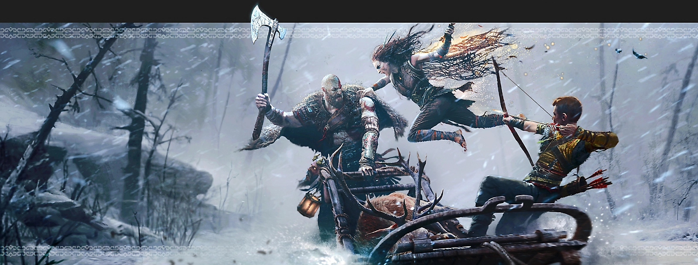

 전투 방식 God of War에서 크레토스의 전투 방식은 그가 상대할 북유럽의 생명체와의 격렬한 싸움을 비춰줍니다. 새로운 주 무기와 새 능력은 장르에 새로운 영역을 구축한 폭력의 충돌을 보여주면서도, God of War를 정의하는 주요 요소를 유지합니다. "도끼를 투척해 세계 어느 곳에든 꽂히도록 하고, 다시 소환하고, 충분한 연습을 통해 적을 공격할 수 있고, 적의 뒤를 노려 투척한 뒤 정면으로 접근하며 소환하는 방식으로 적의 뒤를 공격할 수도 있습니다."